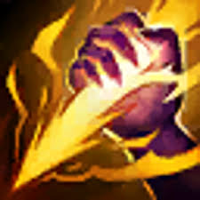
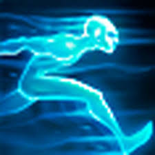

Champion Select
Currently tanky junglers that have splash damage are very powerful, so you should consider playing a tank jungle if you are new to the role. Some of the more popular junglers right now are zac, elise, lee sin, rammus, sejuani, and amumu. All of these junglers are meant to have some tankiness to them. When you are chosing your summoner spells you have to take smite, which does true damage to monsters, and most junglers will also take flash, but sometimes you can get away with taking ghost or ignite depending on who you are playing. For example if you are playing hecarim or warwick a lot of people will take ghost, because movement speed is helpful for them, also shaco will often take ignite, because one of his abilities is basically flash.
 

Laning Phase
Junglers don't really have a lane, but they do have the in between areas of the other lanes, that have different camps, thet spawn monsters such as gromp, wolves, raptors, or krugs, there are also blue buff and red buff that spawn. During the first 5 minutes you should have ganked at least one of your lanes, in order to both get yourself kills/assists, and to help your laners get ahead. You should also tey and take dragon, or at least have vision of it, because it is very important that you are there if your team is trying to take it, so you can use smite, or if the enemy team is going for it, so that you can atempt to steal it.
Team Fights
During team fights you will usually be in the front lines, in order to tank for your teammates, because you should be a tanky champion. If the team fight is over a dragon or Baron you will also be expected to smite the dragon/baron in order to secure it for your team.